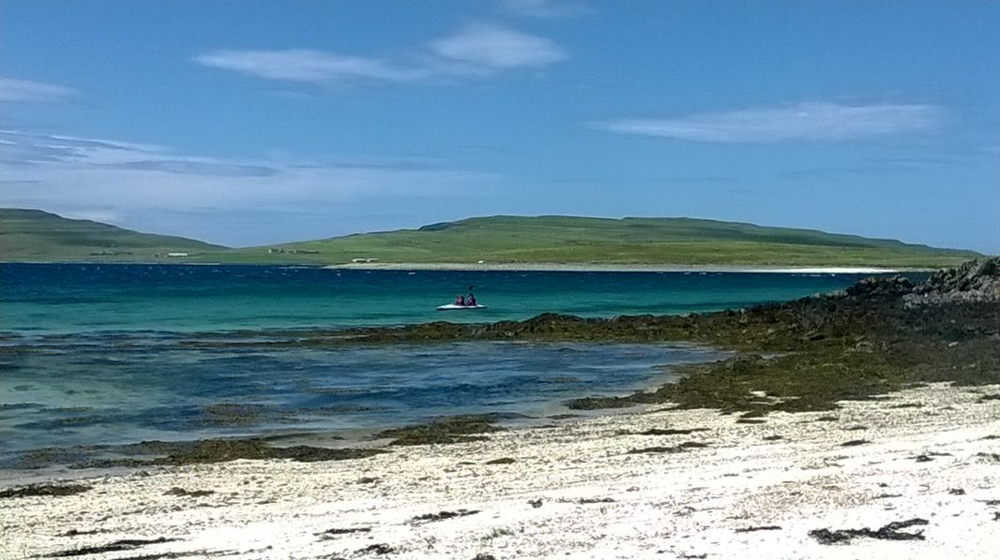

<!DOCTYPE html>
<html lang="en">
  <head>
    <meta charset="utf-8">
  </head>
</html>

<head>
  <title>"Keswick Cottage, Allonby"</title>
  <link rel="stylesheet" type="text/css" href="./css/mainstyles.css">
  <link rel="stylesheet" type="text/css" href="./css/carousel.css">
</head>

<script src="https://use.fontawesome.com/9fa050e14c.js"></script>
<script>
  window.onscroll = function() {scrollFunction()};
</script>

<body>
  <nav class="topnav">
    <maintitle>
      Keswick Cottage, Allonby
      <br>
      <subtitle>Situated in the beautiful Northern Lake District</subtitle>
    </maintitle>
    <mainmenu>
        <a class="nav--home">Home</a>
        <a class="nav--cottage">Cottage</a>
        <a>Nearby Towns</a>
        <a class="debug">Prices</a>
    </mainmenu>
  </nav>

  <section class="carousel">
    <button class="carousel__navbutton carousel__button--left fa fa-solid fa-chevron-left"></button>
    <div class="carousel__tracker-container">
      <ul class="carousel__tracker">
        <li class="carousel__slide current-slide">
          
        </li>         
        <li class="carousel__slide">
          
        </li>
        <li class="carousel__slide">
          
        </li>
      </ul>
    </div>
    <button class="carousel__navbutton carousel__button--right fa fa-solid fa-chevron-right"></button>
    
    <div class="carousel__nav">
      <div class="carousel__nav__text"></div>
      <div class="carousel__indicator__container">
        <button class="carousel__indicator current-slide"></button>
        <button class="carousel__indicator"></button>
        <button class="carousel__indicator"></button>
    </div>
    <script src="js/carousel.js"></script>
  </section>

  <section class="content-header__container">
    <section class="content-header__img-container">
      
    </section>
    <section class="content-header--text">
      <h1>A beautiful location to relax and explore the wonderful Northern Lake District ...</h1>
      <!-- <p>Situated in the centre of Allonby, Keswick cottage offers a wonderful base to explore the beautiful nothern Lake District</p> -->
      Situated in the quiet costal village of Allonby, with stunning views over the Solway
        Firth, <B>Keswick Cottage </B>offers an ideal location either as a base to explore the scenic Northern Lake
        District, or simply as a place to relax and enjoy the peaceful village or surrounding areas.
      <br><br>
        The property is a cosy terraced cottage with spectacular uninterrupted views over Allonby Bay with the Scottish
        Galloway hills beyond and is perfect for couples, particularly those that enjoy walking and exploring the local countryside
        and the Solway Coast itself - designated an area of outstanding natural beauty. . 
      <br><br>
        Keswick Cottage is available for rent throughout the year.
    </section>
    <i class="scrolldown_button fa fa-solid fa-chevron-down"></i>  
  </section>
  
  <div class="content-cottage-details">
    <p>Some text here describing the cottage with scrollable images (?)</p>
  </div>
  <div class="dummy">
    <p>Some text here as a dummy paragraph</p>
  </div>
  <div class="dummy">
    <p>Some text here as a dummy paragraph</p>
  </div>
  <div class="dummy">
    <p>Some text here as a dummy paragraph</p>
  </div>
  <div class="prices"></div>


  <!-- <script src="js/pricing.js"></script> -->
  <script src="js/script.js"></script>

</body>